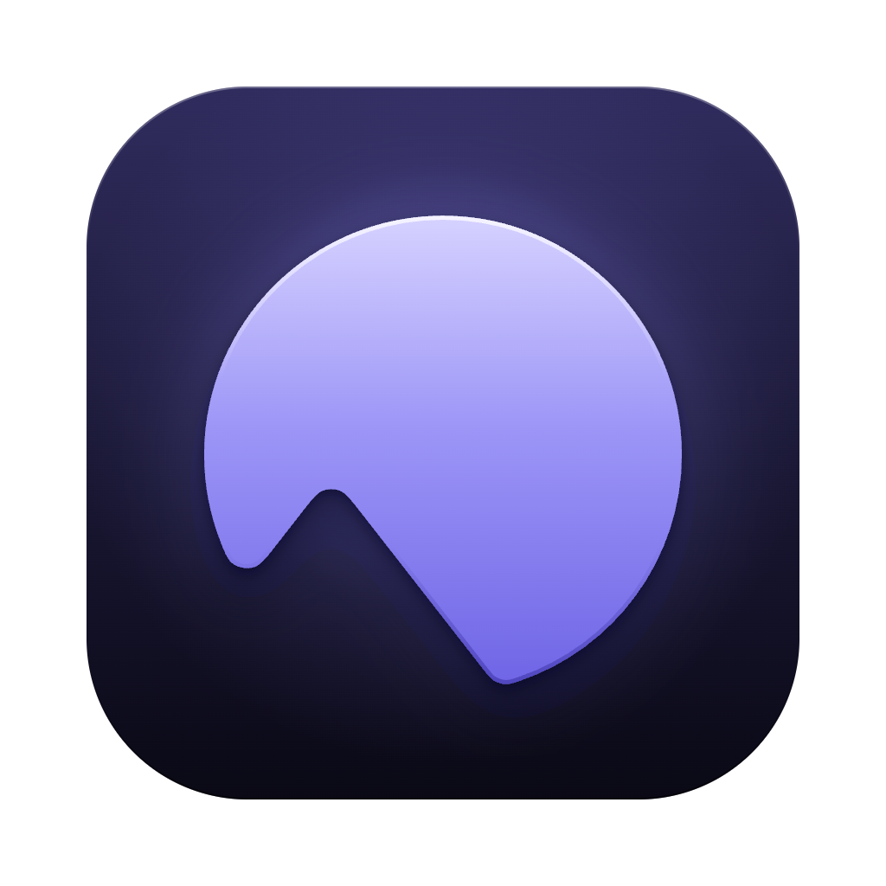

CetusPrivacy Policy
Last updated November 13, 2026
This policy covers Cetus, the Mac app, and Cetus Remote, its iPhone companion. In short: we don't collect your data. There are no accounts, no analytics and no advertising, and we can't read what passes between your phone and your Mac.
What we collect
Nothing. Neither app has a sign-in, and neither sends usage statistics, crash reports or identifiers to us or to any analytics or advertising service.
What stays on your devices
- On your Mac: your conversations, settings and anything Cetus records at your request (such as screen history or meeting notes) are stored locally in the app's data folder.
- On your iPhone: Cetus Remote keeps the pairing with your Mac (a device token in the iOS Keychain), your preferences, and a small cache of folder icons. Conversations are loaded from your Mac when you open them.
How the phone reaches your Mac
Cetus Remote connects to the Cetus app on your own Mac through a relay at relay.cetus.run, hosted on Cloudflare. Everything sent between the two is end-to-end encrypted with the Noise protocol; the keys exist only on your phone and your Mac, so the relay forwards data it cannot read.
The relay stores one thing per paired Mac: a hash of that Mac's relay key, so no one else can claim its address. It keeps no messages and no conversation content. Like any internet service, the relay and Cloudflare see the IP addresses that connect to them.
Permissions on iPhone
- Camera: used only to scan the pairing QR code shown on your Mac. Nothing is recorded or uploaded.
- Photos: used only when you choose a photo to attach to a message. The photo goes to your Mac over the encrypted connection.
Services you connect yourself
Cetus on the Mac runs the agents and models you set up, such as Claude Code, Codex or a model provider you add an API key for. What you send to those services is governed by their own privacy policies. The Mac app also checks GitHub for new versions of Cetus.
Children
Cetus is a tool for software developers and is not directed at children under 13.
Changes
If this policy changes, the new version will be posted on this page with a new date.
Contact
Questions about privacy? Open an issue at github.com/william-jin-cmu/cetus.